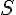
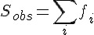
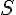
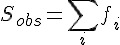
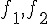
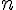
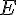
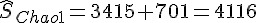

前言
編輯小語
在本期的「程式人雜誌」中，聚焦的一個主題是「電子玩具」，像是樂高 MindStorm、電子積木等等，甚至像 Arduino 與 Raspberry Pi 等我也認為可以變成玩具，我認為這類的玩具的開發空間還很大，像是學習有線無線通訊的玩具到目前為止 我就還找不到，自己動手用 Arduino 與 Raspberry Pi 做四軸飛行器等也可以算是某種玩具。
目前、3D 印表受到了很大的注意、但事實上像是 FPGA 、電路板雕刻機與電路印表機等技術也正在發展當中，未來或許 真的有機會將「工廠搬回家」，在家生產電子玩具的原型也說不定。而像麵包板、手動焊接等傳統方法也是可以訓練 電路知識的好方法，加上電腦軟體模擬的技術，像是 Spice 與 Verilog 之類的軟體設計模擬方式之後，筆者相信可以整合 一套很好的電子教學方法，讓小孩也能輕易的學會這些專業知識的。
在程式人文集當中，雖然「 R 統計軟體與 JavaScript 系列」暫時結束了，但是我們將加入像「C 語言秘技」等系列文章， 祝大家閱讀愉快。
---- （程式人雜誌編輯 - 陳鍾誠）
授權聲明
本雜誌採用 創作共用：姓名標示、相同方式分享 授權，若您想要修改本書產生衍生著作時，至少應該遵守下列授權條件：
- 標示原作者姓名
- 採用 創作共用：姓名標示、相同方式分享 的方式公開衍生著作。
另外、當本雜誌中有文章或素材並非採用 姓名標示、相同方式分享 時，將會在該文章或素材後面標示其授權，此時該文章將以該標示的方式授權釋出，請修改者注意這些授權標示，以避免產生侵權糾紛。
例如有些文章可能不希望被作為「商業性使用」，此時就可能會採用創作共用：姓名標示、非商業性、相同方式分享 的授權，此時您就不應當將該文章用於商業用途上。
最後、懇請勿移除公益捐贈的相關描述，以便讓愛心得以持續散播！
程式人短訊
歷史短訊：電玩遊戲的歷史
對於台灣的五年級 (民國 50 年代出生) 的朋友們而言，可能很多人都玩過那種小型的掌上遊戲機， 但是大部分的人可能不瞭解這類電動遊戲的歷史，在本期的程式人雜誌當中，我們會將焦點放在遊戲 與其相關產品的歷史介紹上。
1950 年代
電玩遊戲起源於 1950 年代，Thomas T. Goldsmith Jr. 與 Estle Ray Mann兩人是第一位申請遊戲機專利者， 描述了一個用了八顆真空管以模擬飛彈對目標發射，包括使用許多旋紐以調整飛彈航線與速度的遊戲裝置， 但是當時的顯示技術還不夠成熟，結果只好改用單層透明版畫當目標，所以這個遊戲機不太好用。
1951年，英國的 Christopher Strachey 寫出了西洋跳棋程式，1952年劍橋大學的 A.S. Douglas 發展出了 一個稱為《OXO》井字棋遊戲。1958年 William Higinbotham 利用示波器與類比電腦創造出了《雙人網球》遊戲。
1960 年代
1961年，美國的 Steve Russell 等學生，於麻省理工學院的一部 DEC PDP-1 電腦中寫了一個名為《宇宙戰爭》 （Spacewar!）的遊戲。後來這款遊戲還在早期的網際網路上發售。因此 Spacewar 被認為是第一個廣為 流傳及具影響力的電子遊戲。
1966年，Ralph Baer 發明了一個在標準電視上顯示的簡單電子遊戲：《追擊》（Chase）。 後來並幫助 Bill Harrison 一起製造了光線槍並於1967年與 Bill Rusch 共同開發了幾個電子遊戲。1968年他們發展出一個具有桌球及射擊等不同遊戲的原型機。
1969年，C 語言發明人之一的 Ken Thompson 寫了一個在 Multics 系統上運行的《太空旅行》 （Space Travel）遊戲。後來 Ken Thompson 改用 PDP-7 撰寫，結果寫著寫著就創造出了 UNIX 作業系統， 而《太空旅行》也就成了 UNIX 的第一個應用程式。
1970 年代
1971年9月，模仿《宇宙戰爭》的初代小蜜蜂遊戲（Galaxy Game）被安裝在史丹福大學的一個學生活動中心裏。 是第一個投幣式電子遊戲，而且該機器只有建造一部。
1971年， Nolan Bushnell 與 Ted Babney 建造了《宇宙戰爭》的投幣式街機版本，稱為《電腦空間》。 後來 Nutting Associates 取得該遊戲授權並大量製造了 1500 部，於 1971 年 11 月發行。 雖然該遊戲因各種困難而不太成功，但卻樹立了標竿，成為第一個大量製造並供商業銷售的電子遊戲。
有了上述的經驗， Nolan Bushnell 與 Ted Babney 兩人乾脆攜手於 1972 年創立了 Atari 公司， 並於同一年內就創造出 《乓》（Pong）這款遊戲，而且大獲成功，總共賣了19,000 部，以下是 Pong 這個遊戲 的畫面，或許您曾經玩過也說不定。
圖、Pong 遊戲的畫面
1977年，Atari發行了名為 Video Computer System (VCS) 卡匣為主的遊戲機，後來改稱Atari 2600， 設計了9款遊戲並在假期季節發行。它迅速成為所有早期遊戲機當中最受歡迎的一款。
後來日本開始踏進遊戲工業，1978年日本 TAITO 公司開發出的《太空侵略者》（Space Invaders）大賣， 遊戲產業開始進入美日兩國相互競爭的年代。
1979 年的小精靈《Pac-Man》第一個在主流文化上廣受歡迎，並且是第一個遊戲角色以其自己本身形象 獲得大眾肯定的遊戲。
1980 年代
街機黃金年代在1980年代到達了頂峰，很多在技術或類型上革新的遊戲在80年代前幾年紛紛出現。
《3D怪物迷宮》（3D Monster Maze，1981年）是家用電腦上的第一個三維遊戲，而《戴格拉斯地下城》（Dungeons of Daggorath，1982年）則再添加了各種類型的武器與怪物、細緻的音效、和一個「心跳」的血條。《一級方程式賽車》（Pole Position，1982年）。
1980年發行的《魔域》更進一步地使文字冒險遊戲在家用電腦上流行起來，並確立了開發商Infocom在這類型遊戲上的優勢。
1982年8月，Commodore 64公開發行。它因為強勢行銷與優越價位造成其一開始就賣得火紅。
1983年 SuperSet Software公司創造了《狙擊》（Snipes）這個文字模式的網路電腦遊戲，並在新的IBM PC架構下的電腦網路測試、展示遊戲功能。
1984年一個真正的現代冒險遊戲隨著雪樂山《國王密使》系列誕生。
BBS 在1980年代十分流行，因此有時被用來當作線上遊戲進行的平台。許多玩家透過 BBS 進行遊戲。遊戲類型從文字冒險到賭博遊戲如廿一點等。也有多人遊戲像是 MUD (Multi-User Dungeons） 等等，這些遊戲最終進化成今日眾所週知的 MMORPG（大型多人在線角色扮演遊戲）。
任天堂的 Game &Watch 生產線在 1980 年開始生產 LCD 可攜遊戲機。 後來很多廠商也開始做。它們的體積很小，有些可以像手錶一樣可載在手腕上。
電腦遊戲市場於 1984 年取代了家用機市場。1985年，北美的電子遊戲市場因任天堂在亞洲外被稱為任天堂娛樂系統（Nintendo Entertainment System，縮寫為NES）的8位元FC遊戲機(任天堂紅白機）的發行而復甦。該機隨機銷售《超級瑪利歐》，立即大賣。在新遊戲機裏，手柄取代了搖桿、旋鈕及keypad成為系統所包括的預設遊戲操縱器。一個備8個方向的指向柄（Directional-pad, D-pad）和2個或以上的行動鍵的手柄設計成為了當時的標準。
1986年《勇者鬥惡龍系列》第一部《勇者鬥惡龍 I》發行，在日本文化上造成有史以來的奇蹟，又稱國民RPG。
1990 年代
1990年代三維電腦圖像，伴隨著透過音效卡與光碟機的「多媒體」能力升級。1992年即時戰略遊戲（RTS）沙丘魔堡II發行。它當然絕不是該類型遊戲第一炮（許多其他遊戲足以被稱為非常原始的RTS，請參見即時戰略遊戲歷史），不過它為後來的票房RTS遊戲如魔獸爭霸、終極動員令、與星海爭霸定下了這類遊戲的標準技巧。
1990年代Maxis開始發行它成功的《模擬XX系列》，從《模擬城市》（Sim City）開始，以其它不同的變種作為延續，如《模擬地球》（Sim Earth）、《模擬城市2000》（Sim City 2000）、《模擬螞蟻》（Sim Antz）、《模擬大樓》（Sim Towers）及2000年推出、後來燴炙人口的日常生活模擬器──《模擬人生》（The Sims）。
1996年，隨著3dfx的Voodoo晶片上市，引領了第一個個人電腦上使用的平價3D加速卡。第一人稱射擊遊戲（如有名的《雷神之錘》）是其中第一個利用這新技術的。
任天堂64沿用了卡匣而非CD-ROM，此舉帶來了較高的成本並引起遊戲廠商的不滿。值得一提的是，史克威爾把之前由任天堂家機平台獨佔的《最終幻想》系列轉給了PlayStation；1997年《最終幻想VII》的巨大成功，使 PlayStation成為該類遊戲的主要平台，並帶動RPG的流行。
1998 年投入市場的Dreamcast，開啟了此世代的大門，但其銷路不佳，隨後在後繼機種出現前就淡出市場，SEGA 因此撤退到第三方遊戲開發市場。索尼以PlayStation 2 開啟新的紀元，該機器日後成為目前為止銷售最佳的家用機。
2000 年之後
在2001年年終之前，視窗作業系統暨專業生產力軟體巨擘微軟，挾家用機市場成熟與世嘉和任天堂的衰頹，以Xbox切入電子遊戲業。
隨著價廉物美的寬頻網際網路連線在全球普及，許多出版商轉向時間計費線上遊戲，作為一種創新嘗試。大型多人在線角色扮演遊戲（MMORPG）號召了許多作品的賣座，如《魔獸世界》（World of Warcraft）與《最終幻想XI》（Final Fantasy XI）。此類遊戲主打PC市場，Xbox透過其內建的網路介面分了一杯羹。而PS2與GameCube缺乏上線能力，兩者後來都有這類連網附加週邊發行，但反響效果不如xbox live。
2005年任天堂的 Wii Remote 成功的將手握型遙控體感裝置帶入家庭遊戲的領域，成為新一代家庭遊戲機的典範。
2010年，微軟推出了 Kinect 改用身體當作體感裝置，搶食了 Wii 的市場。
接著、蘋果推出的 iPad 大受歡迎，讓平板遊戲開始快速發展，整個世界進入了行動娛樂的新時代 .....
參考文獻
【本文由陳鍾誠取材並修改自 維基百科，採用創作共用的 姓名標示、相同方式分享 授權】
硬體短訊：把工廠搬入家庭的「原型製作」技術
最近兩年在 3D 印表機的帶頭之下，興起了一個 Maker 熱潮，雖然 3D 印表已經存在了幾十年了， 但是這類的技術最近激起了很多人的希望，或許有機會可以將不少原本只有在工廠可以做出來的東西 搬回家裏做也說不定。
以下我們將介紹一些類似 3D 印表機的原型技術，這些技術很多都還在發展當中，尚未真正的商品化， 但有些卻是已經很成熟的老掉牙技術了，不過一但這些技術成功的進入家庭，都會對 Maker 運動產生 正面的影響。
電路印表機
電路印表機是一種可以印出電路的機器，據說這種印表機的成本相當的便宜，大約台幣一萬元左右而已， 而且一分鐘之內就可以印出一張電路。
- 科學家開發《墨水列印電路板》 只要一台印表機就搞定
- EX1 是一台神奇的印表機，可以將電路直接列印在紙張、布料上
- The EX¹ - rapid 3D printing of circuit boards
如果有了這樣的一台印表機，那麼我們用電腦設計的電路就可以直接被印出來，這對開發電子產品的原型將會是一大神器。
電路手寫筆
既然可以用印的，那當然也可以用畫的，電路手寫筆 Circuit Scribe 就是這樣一支神奇的筆，您只要畫一畫， 筆經過的地方就成了可導電的線路，這樣我們就不太需要接麵包板，只要畫一畫之後，再把元件接上去就好了。 以下是 Circuit Scribe 在 KickStarter 網站上募資時釋出的網址與影片，真是令人期待啊！
- Circuit Scribe: Draw Circuits Instantly, by Electroninks Incorporated.
傳統的原型技術
除了以上這些比較新穎的技術之外，其實麵包板就是一種原型設計工具，而最近興起的 Arduino、Raspberry Pi 這類 開源硬體，則降低了開發電子產品原型的難度，讓我們可以在家裏設計電子產品，我想這也是為何最近 Maker 運動如火如荼 的重要原因。
但是、還有一些已經很成熟的技術，其實對製作原型也很有幫助，甚至可以讓工業技術進入家庭，或者成為玩具的， 例如像是樂高的 NXT MindStorm 機器人套件，其實某種程度上也是一種電子產品的原型設計工具。而像 Altera 與 Xylinks 這兩家廠商主宰的 FPGA 技術，則可以讓我們輕易的設計出非常複雜的數位電路，像是 CPU 等等，這些工具 對筆者而言，都是某種原型開發工具，這類工具在大學老師教電子資訊類學生的時候，會有很大的幫助， 這也是筆者為何特別關注這類技術的原因。
除此之外，近來在 Maker 運動與 KickStarter 之類的募資管道合力下，很多原本很難跨入的領域，也都有了進入家庭的可能， 像是以下的 HackRF 專案，就企圖設計出一組開放原始碼的高功能 RF 模組。
未來這些硬體裝置如果能與開放原始碼的軟體，像是 GNU Radio 等結合，那麼無線通訊產品的開發也可能透過這些進入家庭。
另外、筆者也特別對 Papillo 這個將 FPGA 技術開放原始碼的專案特別有興趣，一但這樣的技術能夠接上開放原始碼的 EDA 工具， 那麼就有可能突破 Altera 與 Xylinks 等廠商的壟斷型態，將 FPGA 這種強力的原型技術納入開源的版圖，於是我們就可以在這種 開源環境下設計「開源的數位電路」，再搭配像電路印表機與手寫筆等技術，或許只要一台電腦就可以開發任何數位類比電路了也說不定。
如果您有看到哪些有趣的原型技術，也歡迎分享到 科學玩具實驗室 與 程式人雜誌社團 讓我們知道， 也歡迎加入這些社團與我們一同研究「程式、原型與玩具」等技術。
人物速寫
Atari 的創辦人 - Nolan Key Bushnell

圖、Atari 的創辦人 Nolan Bushnell
早期
1968年，Nolan Key Bushnell 從美國猶他大學畢業，當時的他應該不會想到，自己後來成為電玩史上的 傳奇人物。
1971年， Nolan Bushnell 與 Ted Babney 建造了《宇宙戰爭》的投幣式街機版本，稱為《電腦空間》。 後來 Nutting Associates 取得該遊戲授權並大量製造了 1500 部，於 1971 年 11 月發行。 雖然該遊戲因各種困難而不太成功，但卻樹立了標竿，成為第一個大量製造並供商業銷售的電子遊戲。
Atari 公司
1972年，Nolan Bushnell 與 Ted Babney 兩人又再度攜手創辦了 Atari 公司，並且推出了革命性的 乒乓遊戲 (Pong)，以下是該遊戲的一個畫面。
圖、乒乓遊戲 Pong 的一個畫面
1976年，為了開發新遊戲機，Bushnell 乾脆將整個公司以2800萬美元的價格出售給 「華納通訊公司」（Warner Communications）以便取得開發資金，並在進一步取得 1 億美元的追加投資後， Atari 公司在 1977 年 開發出型號為 2600 的遊戲機，成為該公司的經典代表作，這讓 1982 年 Atari 的年銷售額達到 20 億美元。
離開 Atari 之後
1978 年，Nolan Bushnell 與華納通訊的老闆因公司經營方向產生爭執，於是只好離開 Atari 公司。
離開後，他手上還有一家集合「快餐、遊戲和娛樂」於一體的 Chuck E. Cheese 的 Pizza 餐館，1981 年 Nolan Bushnell 將餐館交給他人經營，並創辦了 Catalyst Technologies 這家公司 (該公司是最早期的育成中心 business incubators 之一)。
可惜的是， 1983 年時 Chuck E. Cheese 餐館出現了財務問題，並於 1984 年宣告破產。
Catalyst Technologies 這家育成公司後來孵育出了 Androbot, Etak, Cumma, and Axlon 等公司，Axlon 後來創造出 不少受歡迎的產品，像是一隻泰迪熊 AG Bear，並為 Atari 2600 設計了兩款遊戲。而孵育出的 Etak 這家公司則成為 電子地圖的先驅，
1990 年代 Nolan Bushnell 成了 PlayNet 這家公司的顧問，後來又在 2000 年成立了 uWink 這家數位娛樂公司，經營 類似網咖 (網吧) 的業務。然後在 2012 年又成立了 BrainRush 這家公司，致力於開發具有教育學習功能的電玩遊戲。
2010 年 Atari 宣布 Nolan Bushnell 回到 Atari 的董事會，成為董事會的董事之一。
Atari 與台灣
Atari 公司的成功也對台灣產生了重要的影響，Atari 於 1980 年時在台灣的工廠每天可以生產1萬5000台遊戲機， 而且使用的連結器全都來自鴻海，是鴻海早期的主要客戶之一。
當初為了取得 Atari 的連結器訂單，郭台銘跳過代理通路直接找上任職於 Atari 的方國健，宣稱擁有 「秘密武器」，可以將成本大幅縮減至「嚇死人的地步」，成功的透過方國健拿下了訂單。
尾聲
從 Nolan Key Bushnell 的故事中，我們可以看到一位創業家奮鬥的歷程。雖然在 Atari 之後，Nolan Bushnell 看來並沒有創造出非常知名的公司，但是這樣的一位創業家與遊戲領域先驅者，即使到了老年仍然不斷的奮鬥創業， 這是非常令人敬佩的啊！
參考文獻
- Wikipedia:Nolan Bushnell
- Wikipedia:諾蘭·布希內爾
- Wikipedia:Atari
- Wikipedia:雅達利
- Wikipedia:UWink
- Wikipedia:電子遊戲歷史
- 剖析鴻海1〉麥實創投董事長 方國健訪談 -- 鴻海還能代工什麼？我找不到答案, 作者：呂愛麗, 出處：2011年12月號《遠見雜誌》 第306期。
【本文由陳鍾誠取材並修改自 維基百科，內文採用創作共用的 姓名標示、相同方式分享 授權】
電子積木發明人 - 王文渭 老先生
還記得去年我在萬華萬大路的一家隱身於巷子內的超難找小店裏，買了一盒「電子積木」玩具， 那盒積木大概就像下列淘寶網電子積木分類下的這些玩具一樣
但是、由於今年淘寶透過全家便利店直接攻入台灣，現在您應該可以輕鬆的透過「全家取貨」的方式買到這類的東西了。
雖然這樣的電子積木，在技術層次上並不是非常高，但是卻是真正能量產，能夠賣到商場與玩具店的一種教學產品。
令人意外的，在中國大陸，這類型的電子積木，卻是由一位王文渭老先生所發明的，以下是節錄自 互動百科:王文渭 的一段描述：
1988年，王文渭還是湖北省電業技工學校電子老師，在實際的電子教學過程中，為了讓學生更形像更直觀的了解電子電路，王老師根據多年的實際教學經驗，發明了多用電子電工實驗裝置，專門用於電子電路實驗教學。此方法在老師和學生中大受歡迎。後來此裝置還獲得了國家教育部實驗教學的特等獎。
1995年，王老師進一步改善了萬用電子積木，並重新申請了專利。於是，一款用於兒童早教、開發智力的兒童玩具終於誕生了。這項發明，在電子玩具領域內，不僅在國內尚屬首例，在國際市場上也是空白！
1996年，王老師在朋友的介紹來，來到了杭州，此時杭州有兩家企業願意與他合作，王老師終於選擇了其中一家公司，簽訂協議後，成立了杭州科林電子有限公司，主打產品《百變電子圖》。科林公司為了盡快讓這一產品推廣到市場，通過教育部門，在全國範圍內舉辦了中小學生電子競賽。通過這場競賽，百變電子圖終於走進了千家萬戶。在與科林的三年合同期間，百變電子圖為公司帶來了近千萬元的營業額，萬老師也從中獲取了相應的報酬！而王老師的“電子要從娃娃抓起的目標”終於實現了！
以下是互動百科中有關這種電子積木的介紹：
另外、大陸也有一些電視節目訪問並介紹了「王文渭」老先生，以下是其中的幾段訪問。
關於這些電子積木的玩法，您可以參考下列的影片：
這樣的玩具讓我想起在我小時候的台灣，有一款玩具叫做「動動腦」，您可以在以下網址看到這種玩具。
我很喜歡像「動動腦」這類的玩具，而且「動動腦」赤裸裸的將「電容、電阻、電感」呈現在小孩的眼前，玩的時後感覺更加有意思， 只是入門的難度會更高一些，而且對兒童恐怕會有一些安全性的問題。
我在想，如果能將 Arduino、Raspberry Pi、與麵包板之類的電子實驗器材，改造成安全性較高的玩具，那應該對小孩會是一個很有 吸引力的東西，樂高的 NXT MindStorm 就是一個成功的範例，不過如果能夠進一步納入 FPGA 之類的設備，讓小孩也能自行學習 設計 CPU、甚至是無線收發模組，那我想對激發小孩的學習潛力而言，應該會有很好的效果才對。
影音頻道
看影片瞭解電玩遊戲的起源與歷史
對於台灣的五年級 (民國 50 年代出生) 的朋友們而言，可能很多人都玩過那種小型的掌上遊戲機， 但是大部分的人可能不瞭解這類電動遊戲的歷史，以下的影片用較通俗的方式介紹了電玩的歷史。
| History of Video Games | 內容簡介 | 連結 |
|---|---|---|
| 前言 | Making of | http://youtu.be/YqJEgA93KEo |
| 第 1 集 | steve russell, computer space, spacewar | http://youtu.be/Egw-EdMVZ4w |
| 第 2 集 | Magnavox Odyssey Ralph Baer | http://youtu.be/BNkDjQPdlu0 |
| 第 2B 集 | Magnavox Odyssey Light Rifle Gun | http://youtu.be/WyXwqJOyDUY |
| 第 3 集 | PONG, Space Race, Gotcha, Gran Trak 10 | http://youtu.be/Or35jROrkmc |
| 第 4 集 | steve russell, computer space, spacewar | http://youtu.be/XgzJWYNtVJY |

圖、第一個進入生活領域的 Pong 電玩遊戲
看到上面的「乒乓球」遊戲，真的讓我想起很小的時候，曾經看過且玩過這樣的遊戲機，而後來的「小蜜蜂」 、「小精靈」等遊戲，還曾經造成很多小學生在電動玩具店流連忘返。
我記得在我小學一年級左右，台灣街頭巷尾都有人在店裏擺上一台電動機台，小孩投兩塊錢好像就可以玩一次， 那時候我很喜歡玩「小精靈、小蜜蜂」之類的遊戲，可惜功力太差，常常不到兩分鐘就掛了。
但是我的大哥後來練到功力很好，結果怎麼打都不會掛，還常常引起一堆人在旁圍觀，一打就是一個小時， 結果 .... ，我的老爸聞風而來，把他給捉回去，然後就禁止他打電動了。
而我、則是因為功力太差，反而逃過一劫 ...
參考文獻
【本文由陳鍾誠取材並修改自 維基百科，採用創作共用的 姓名標示、相同方式分享 授權】
程式人文集
Arduino入門教學(12) – 使用可變電阻控制伺服馬達 (作者：Cooper Maa)
實驗目的
練習用可變電阻控制伺服馬達(Servo motor)的旋轉角度。
材料
- 麵包板 x 1
- Arduino 主板 x 1
- 伺服馬達(Servo Motor) x 1
- 10k 可變電阻 x 1
- 單心線 x N
接線
伺服馬達有三條線，電源(紅線)、接地(黑線)，以及訊號線。

把伺服馬達紅線接到 +5v，黑線接到 GND，訊號線接到 pin 9 可變電阻中間腳位接到類比輸入(Analog Input) pin 0，剩下的兩支腳位，一支接到 5V，另外一支接到 GND

電路圖
程式碼
RC 伺服馬達(Radio Controlled Servo Motor) 大部份是透過 PWM (Pulse Width Modulation, 脈波寬度調變)來控制，Arduino 裏內建了 Servo Library 讓事情變得很簡單，就算你對 PWM 不熟，也可以很輕鬆地控制伺服馬達。底下的程式碼示範 Servo Library 的使用方法(Servo.pde):
// 引用 Servo Library
#include <Servo.h>
// 建立一個 Servo 物件
Servo myservo;
// 旋轉角度
int value = 0;
void setup()
{
myservo.attach(9); // Servo 接在 pin 9
}
void loop()
{
if (value == 0)
value = 180;
else
value = 0;
// 叫 Servo 旋轉角度:
// myservo.write(0) 是叫 Servo 旋轉到 0 度的位置
// myservo.write(180) 是叫 Servo 旋轉到 180 度的位置
myservo.write(value);
delay(1500);
} 程式說明:
- L2: 引用 Servo library
- L5: 利用 Servo 類別建立 myservo 物件
- L24: 要控制 Servo 旋轉角度，只要呼叫 Servo 的 write() 並傳入指定的角度就可以了，例如 myservo.write(180) 是控制 Servo 轉到 180 度，myservo.write(120) 是控制 Servo 轉到 120 度。 使用可變電阻控制伺服馬達(PotServo.pde):
// 使用可變電阻控制 Servo 的旋轉角度
// by Michal Rinott <http://people.interaction-ivrea.it/m.rinott>
// 引用 Servo Library
#include <Servo.h>
// 建立一個 Servo 物件
Servo myservo;
// 可變電阻接在 Analog pin 0
int potpin = 0;
// 儲存旋轉角度的變數
int val;
void setup()
{
myservo.attach(9); // Servo 接在 pin 9
}
void loop()
{
val = analogRead(potpin); // 讀取可變電阻(數值介於 0 到 1023)
val = map(val, 0, 1023, 0, 179); // 把 0 - 1023 的數值按比例縮放為 0 - 180 的數值
myservo.write(val); // 設定 Servo 旋轉角度
delay(15); // 等待 Servo 旋轉指定的位置
}程式說明:
- L22: 讀取可變電阻並將讀到的數值(介於 0 到 0123)儲存在 val 變數中
- L23: 0 到 1023 的數值必須經過數值轉換，依比例轉為 0 到 180 的數值，因為我們的伺服馬達只能在 0 到 180 度之間旋轉。範例程式利用 map() 函式將 0 – 1023 的值對應到 0 -179。
- L24: 根據讀到的可變電阻值控制 Servo 轉到指定的角度
範例照片／影片
請參考 makezine.com 做的這個影片，影片除了示範伺服馬達的控制外，也講解了線路的接法以及程式碼：
延伸閱讀
【本文作者為馬萬圳，原文網址為： http://coopermaa2nd.blogspot.tw/2011/01/arduino-lab16.html ，由陳鍾誠編輯後納入本雜誌】
C 語言秘技 (1) – 使用 sscanf 模仿正規表達式的剖析功能 (作者：陳鍾誠)
在本系列文章中，我們將會陸續介紹一些 C 語言當中比較不常見，但是卻很強大的用法，希望透過這一系列的文章，能讓讀者感受到 C 語言的威力。
前言
從 1972 年 Dennis Ritchie 在貝爾實驗室發明 C 語言至今，已經過了將近四十個年頭。在這個變化快速的電腦世界裡，C 語言彷彿成了不變的避風港。四十年來，C 語言的改變並不多，而且一直都是所有作業系統底層的主力語言。近來，由於 Linux 與開放原始碼的發展，C 語言的影響力更為增強。在這裡，我不禁要問一個問題，為何 C 語言可以經過四十年而幾乎毫不改變。
C 語言很快，這或許是原因之ㄧ，但是像 Pascal 或 Fortran 等語言也幾乎與 C 語言一樣快，那又為何非 C 語言不可。但是，C 語言不只是快，還具有指標，容易與組合語言連結，具有巨集、條件式編譯、inline 函數、結構化、可以使用記憶體映射輸出入，因此可以用高階語言撰寫低階輸出入驅動程式，還有撰寫作業系統。
這些特性，讓 C 語言特別適合撰寫嵌入式系統，而嵌入式系統的環境，基本上也就是讓電腦退化到幾十年前的狀態，很小的記憶體、很慢的 CPU、通常沒有硬碟等等。今日的嵌入式系統，有點神似當年 Dennis Ritchie 所面對的環境，在很克難的資源中，發展出強大的作業系統。
UNIX 正是催生 C 語言的主要動力，當年 Ken Thompson 與 Dennis Ritchie 正是為了發展 UNIX 而設計出 C 語言的，這兩人也因為 UNIX/C 的貢獻而被 ACM 授予 Turing Award 這的電腦界的諾貝爾獎。
在 1978 年，Dennis 與另一位共同作者 Brian Wilson Kernighan 合力撰寫了第一本廣為流傳的 C 語言教科書，而這個版本的教科書由於影響深遠，成為人手一冊的 C 語言經典，因此後來我們這個版本的 C 語言教科書簡稱為 K&R 版本， 這個經典書籍中所使用的 C 語言版本也因此而被稱為 K&R 版的 C 語言，以便與後來 1988 年的 ANSI C 版本，以及 1999 年的 ISO C99 版本有所區隔。 (一個很容易誤會的點是， Ken Thompson 與 Brian Wilson Kernighan 是不同的兩個人，Ken Thompson 是發明 UNIX 與 C 語言的那個 Turing Award 得獎者，但是 Brian Wilson Kernighan 則是 C 語言書籍的作者，這兩個人的名字雖然都以 K 開頭，但是此 K 非比 K，請讀者切勿混淆)。
因此，學習 C 語言的人，如果只是將 C 當作是一般的程式語言，就會難以體會 C 語言的威力之所在，我們必須進入嵌入式與作業系統的領域，才能體會 C 語言的優點。一但您能夠體會這些優點，C 語言將不再僅僅是一個普通的語言，您也將能體會為何 C 語言會經歷四十年而不墬。然後，您也才能發揮 C 語言的能力，並且體會這些設計背後的優點與缺點。
C 語言的優缺點
C 語言並非沒有缺點的，實際上，C 語言的缺點非常的多，多到可以用罄竹難書來形容。舉例而言，用 C 語言寫程式很容易有 bug，特別是在記憶體分配與回收這部份更是如此。C 語言沒有自動記憶体回收機制，沒有垃圾收集功能，因此常常導致忘記釋放記憶體，或者將同一個記憶體釋放數次，因而造成錯誤。C 語言的字串很原始，使用起來非常不方便。C 語言的標準函式庫甚至沒有基本的資料結構，像是陣列、串列、堆疊、字典等相關結構的函式庫。C 語言的條件式編譯讓程式看起來很冗長，使用標頭檔 *.h 讓你必需重複撰寫函數表頭，浪費許多時間。更糟的是，由於 C 語言的標準函式庫很小，因此在不同的平台上，每個廠商都實作出完全不同的函式庫，這導致 C 語言的程式難以跨越平台執行，您必須位每個平台打造一份程式，而不像 Java 那樣可以 Write Once，Run Anywhere。
但是，即便有了這麼多的缺點，C 語言仍然歷經四十年而不衰，這又是為甚麼呢？
每個 C 語言的缺點，幾乎都是伴隨著其優點而來的，C 語言的記憶體難以管理，是因為 C 語言具有強大的指標功能。字串函數很原始，是為了讓您可以使用字元陣列的方式處理字串，而不需要使用動態記憶體配置。無法跨越平台，是因為 C 語言適合用來打造底層的嵌入式系統，可以直接連結組合語言協同工作。從這個角度看來，C 語言的設計其實是相當精巧的，這也是 C 語言為何經歷四十年而不衰的原因。
學習 C 語言的好處
C 語言幾乎是當今被廣泛使用的語言當中，唯一同時具有高階與低階特性的語言，這個特性主要是由指標所造成的。利用指標，您可以用記憶體映射的方法存取記憶體，這讓 C 語言可以直接與周邊裝置溝通，因此許多裝置驅動程式可以用 C 語言撰寫，而不需要全部用組合語言。
學習 C 語言的投資報酬率，必須以數十年甚至一輩子的眼光來看，而不是短視的。程式語言多如過江之鯽，每隔兩三年就必須學習全新的語言，就像流行音樂或服飾一般，學會之後很快就會膩了。C 語言絕對不是流行的語言，而是一種經典的、長久的、耐用的語言，您在 C 語言的投資不會浪費，因為 C 語言將會陪伴您，走過數十年，甚至是一輩子。
密技 1 ：用 sscanf 剖析文字串
C 語言中的 scanf 函數，是初學者都會使用的，但也是大部分人都會誤用，或者是無法充分發揮其功能的。
C 語言的 sscanf() 與 ssprintf() 這兩個函數，採用的是一種既創新又好用的設計法，
事實上，函數 sscanf() 比 scanf() 更為好用，sscanf() 甚至支援了類似 Regular Expression 的功能，可以讓我們輕易的剖析格式化的字串。
sscanf 的函數原形如下，其中的 format 格式字串具有複雜的格式指定功能，以下我們將詳細說明這些格式的用途。
int sscanf ( const char * str, const char * format, ...);
str : 被剖析的字串
format: 剖析格式
在 format 字串中，以 % 起頭者為剖析段落，通常在剖析完成後會指定給後面的變數，其格式語法如下：
剖析段落的語法：%[*][width][modifiers]type
% 代表變數開始
* 代表省略不放入變數中
width 代表最大讀取寬度
modifier 可以是 {h|I|L} 之一
說明 : 其中 h 代表 2 byte 的變數 (像 short int)，
l 代表 4 byte 的變數 (像 long int)，
L 代表 8 byte 的變數 (像 long double)
type 則可以是 c, d,e,E,f,g,G,o, s, u, x, X 等基本型態，
也可以是類似 Regular Expression 的表達式。
說明: c : 字元 (char);
d : 整數 (Decimal integer);
f : 浮點數 (Floating Point);
e,E : 科學記號 (Scientific notation);
g,G : 取浮點數或科學記號當中短的那個;
o : 八進位 (Octal Integer);
u : 無號數 (unsigned integer);
x, X : 十六進位 (Hexadecimal integer)為了說明 sscanf 函數的用法，我們寫了以下程式，以示範 format 欄位的各種寫法。
檔案：sscanf.c
#include <stdio.h>
int main() {
char name[20], tel[50], field[20], areaCode[20], code[20];
int age;
sscanf("name:john age:40 tel:082-313530", "%s", name);
printf("%s\n", name);
sscanf("name:john age:40 tel:082-313530", "%8s", name);
printf("%s\n", name);
sscanf("name:john age:40 tel:082-313530", "%[^:]", name);
printf("%s\n", name);
sscanf("name:john age:40 tel:082-313530", "%[^:]:%s", field, name);
printf("%s %s\n", field, name);
sscanf("name:john age:40 tel:082-313530", "name:%s age:%d tel:%s", name, &age, tel);
printf("%s %d %s\n", name, age, tel);
sscanf("name:john age:40 tel:082-313530", "%*[^:]:%s %*[^:]:%d %*[^:]:%s", name, &age, tel);
printf("%s %d %s\n", name, age, tel);
char protocol[10], site[50], path[50];
sscanf("http://ccckmit.wikidot.com/cp/list/hello.txt",
"%[^:]:%*2[/]%[^/]/%[a-zA-Z0-9._/-]",
protocol, site, path);
printf("protocol=%s site=%s path=%s\n", protocol, site, path);
return 1;
}其編譯執行結果如下所示。
D:\oc>gcc sscanf.c -o sscanf
D:\oc>sscanf
name:john
name:joh
name
name john
john 40 082-313530
john 40 082-313530
protocol=http site=ccckmit.wikidot.com path=cp/list/hello.txt程式碼解析
您應該可以看到，在上述程式碼當中，所有的 %s, %d 等輸入欄位，預設都是以空白做為結尾的，例如以下指令就只會掃描到 name="name:john"，因為後面是空白了，所以就把 %s 的內容丟到了變數 name 當中。
sscanf("name:john age:40 tel:082-313530", "%s", name);
printf("%s\n", name);如果我們在 %s 等樣式中指定長度，像是以下這個 sscanf 所採用的 %8s，那麼掃描到 8 個字元之後就會停止了，所以此時 name="name:joh" 。
sscanf("name:john age:40 tel:082-313530", "%8s", name);
printf("%s\n", name);但是我們可以透過類似正規表達式的語法，來設定掃描的方式，舉例而言，像是以下的 sscanf 所採用的 %[^:] ，就讓我們 可以掃描到 : 符號為止，其中的樣式 [^abc] 符號代表不要比對 a, b, c 這些字元，所以 [^:] 代表的是不可比對到 : 這個符號，因此就會在比對到該符號時停止了。於是掃描的結果會是 name="name" 。
sscanf("name:john age:40 tel:082-313530", "%[^:]", name);
printf("%s\n", name);當然、這些 %s, %d 等樣式之間還可以串接，以便進行連續掃描，因此下面這個 sscanf 指令可以一次掃出 field 與 name 兩個欄位， 結果會是 field="name", name="john" 。
sscanf("name:john age:40 tel:082-313530", "%[^:]:%s", field, name);
printf("%s %s\n", field, name);而且、在掃描到整數或浮點等非字串欄位時，還會將掃描到的結果轉為該型態放入變數中，例如下列 sscanf 指令中的 &age 欄位， 就會直接得到整數值，不需要像一般正規表達式那樣還需要經過轉型才能使用。
sscanf("name:john age:40 tel:082-313530", "name:%s age:%d tel:%s", name, &age, tel);
printf("%s %d %s\n", name, age, tel);如果我們希望某些欄位在掃描後，直接丟棄而不要存入任何變數中，那麼就可以用 %*... 這種加上 * 號的格式，此時 sscanf 會知道要將該欄位丟棄，不要存入到後面的變數裏。
sscanf("name:john age:40 tel:082-313530", "%*[^:]:%s %*[^:]:%d %*[^:]:%s", name, &age, tel);
printf("%s %d %s\n", name, age, tel);甚至、我們可以真的把 sscanf 當成「正規表達式」使用，只是語法稍有差異，功能也不像正規表達式那麼強，不過通常也夠用了。
舉例而言，以下的 sscanf 可以將一個網址剖析成 protocol, site, path 等三個段落，您可以看到我們使用的 "%[^:]:%*2[/]%[^/]/%[a-zA-Z0-9._/-]" 這個樣式，看起來是不是真的很像「正規表達式」呢？
char protocol[10], site[50], path[50];
sscanf("http://ccckmit.wikidot.com/cp/list/hello.txt",
"%[^:]:%*2[/]%[^/]/%[a-zA-Z0-9._/-]",
protocol, site, path);
printf("protocol=%s site=%s path=%s\n", protocol, site, path);結語
對於很多想在 C 語言裏使用正規表達式的朋友來說，很可能沒有想過使用 sscanf 去取代 regex 之類的函式庫，但是經由以上的範例，您應該可以感覺到 sscanf 在某種程度上是可以替代「正規表達式」函式庫的，這樣我們就不需要引入 regex 之類的函式庫，除了節省程式碼所佔的空間之外，由於 sscanf 是標準函式庫，因此使用起來會更加容易。
況且、sscanf 可以直接將 %d %f 之類的參數放入整數與浮點數型態的變數當中，這樣還可以省下一道轉換的動作，因此、只要能夠用 sscanf 替代的功能，筆者通常不會引入正規表達式的函式庫，因為對筆者而言，在 C 當中使用 sscanf 比正規表達式更順手啊！
參考文獻
- http://www.cplusplus.com/reference/clibrary/cstdio/sprintf/
- http://www.cplusplus.com/reference/clibrary/cstdio/sscanf/
淺談動平均濾波器 (作者：黃俊傑)
簡介
動平均濾波器(moving average filter) 可說是世界上使用最廣泛的一種濾波器了; 在股市裡面,每天都可以看到動平均濾波器的應用,股價趨勢圖裡面的週線、月線與 年線, 都是長度不等的動平均輸出圖形。我們在實作訊號處理的時候, 也很常應用 這個簡單又有效率的動平均濾波器。由於它應用廣泛, 許多程式設計師也許沒有修 過數位訊號處理的課程, 不熟悉數位訊號處理分析方式, 但是又需要寫這樣的程式。 因此, 在這一篇文章中, 筆者將會儘量以實例來介紹動平均濾波器的概念, 幾種不同 的實作方式以及優缺點。
最直觀的動平均濾波器,當屬於simple moving average (SMA) 了, 也是應用在 股市以及很多統計上面的動平均。SMA的定義就是取目前輸入之前的N 個取樣的 非權重平均。用數學式表示的話, 就是

或是在訊號處理上我們慣用以下的時域表示式
其中, y(n) 代表目前輸出值, 而x(n) 代表目前輸入值。這個濾波器應用在股市 裡, 就是我們在股票市場裡常常看到的曲線圖, 如週線、月線與年線, 分別是N=7, N=30, N=365 的每日收盤價格的動平均輸出圖形。
使用濾波器來形塑(shape) 你的資料的目的, 通常都是為了要讓資料的重點能 夠呈現出來, 比方說, 股市的波動常常有一個快速變動的部份, 與慢速變動的部份, 而所謂的慢速變動的部份, 我們認為那是長期的趨勢, 是我們想要觀察的重點, 所以 將濾波器應用在每日收盤價格上, 將「快速變動的部份濾掉」, 保留慢速變動的部份, 就成了週線、月線與年線了。以數位訊號處理理論來說, 那些慢速變動就是指低頻 的部份, 快速變動的部份就是高頻的部份, 因此以數位訊號處理的術語來說, 動平均 濾波器就是一個低通濾波器(low pass filter), 意思就是低頻能夠通過的濾波器, 而 高頻的部份就被過濾掉了。又比方心跳表顯示每分鐘心跳率是用一個數值, 而我們 知道心跳每幾秒鐘記錄一次的話, 一分鐘裡面會有上上下下的變化, 不是一直維持 在某一個數值, 每分鐘心跳率就是一分鐘裡面心跳的平均數值, 以方便我們在心跳 表上顯示出來, 但是以每分鐘的平均數值顯示出來的時候, 如果你沒有很大的運動 變化, 每分鐘心跳率是維持在一個定值的。
常用動平均濾波器
在本節中, 我們會介紹四種常見的動平均濾波器, 前兩種動平均濾波器直接實作了 上一節所描述的SMA動平均濾波器,這兩種只有小部分的差異。而第三種是SMA 的變形, 引進了回授的概念來簡化實作的複雜度, 因此前三種廣義上都是SMA 動 平均濾波器的實作。第四種我們要介紹的是指數平均濾波器,與前三種不太一樣,但 是有著實作簡單的好處。
在定點訊號處理裡, 我們有兩種直接實作SMA 的方法, 第一種就如上一節中方 程式2 描述的式子, 先做加總, 再除以N 來得到結果。我們以N=4 為例子說明這個 濾波器, 其方程式會是:

假設我們觀察的是餐廳每半小時的顧客人數, 如表1 中的「輸入」欄位所示, 「輸 出」欄位所示的就是這個N=4的動平均濾波器的輸出序列,計算方式就是依照方程 式3, 以x(n) 為目前輸入, y(n) 為目前輸出值, 以輸入為20 那一欄為例, 這時候
| 輸入 | 0 | 0 | 0 | 0 | 10 | 20 | 30 | 35 | 20 | 10 | 5 | 0 | 0 | 0 | 0 |
|---|---|---|---|---|---|---|---|---|---|---|---|---|---|---|---|
| 輸出 | 0.00 | 0.00 | 0.00 | 0.00 | 2.50 | 7.50 | 15.00 | 23.75 | 26.25 | 23.75 | 17.50 | 8.75 | 3.75 | 1.25 | 0.00 |
圖1: N=4 的動平均輸出入關係圖
圖1 則是把這個輸出入關係繪製成圖形表示, 我們可以看出來, 當輸入發生變化的 時候, 輸出值會以延遲而且比較平緩的趨勢呈現, 延遲是因為動平均濾波器是計算 前N 個輸入, 而比較平緩的趨勢就是動平均濾波器對這個輸入值重塑後的結果。觀 察方程式3可以發現,有兩個輸入數列特別有趣,分別是+1, -1, +1, -1, +1, -1, ... 這 種正負交互出現而且絕對值是一樣的數列。把這個數列輸入到上述的方程式, 我們 會得到全為零的輸出。另一個有趣的數入數列是0, +1, 0, -1, 0, +1, 0, -1, ... 也就是 將上一個數列任兩個數值間都插入一個零值。於是這個數列就變成任意相鄰四個數 字加總起來為零,使得輸出值皆為零的數列。觀察這個兩個數列,第一個數列週期為 2, 第二個數列週期為4。而第一個數列,在數列的極大與極小值固定的情況下,變化 是最為劇烈的一組(或說週期最小), 也就是數位訊號能夠表示的最高頻率, 我們稱之為 Nyquist rate , 或是取樣頻率。第二個數列, 其頻率則為取樣頻率的一半。
這個數位濾波器會讓這兩個頻率的輸入值產生全為零的輸出序列。另一個特殊的序列 就是全部都是定值的序列, 其變化頻率為零, 把這個序列輸入到這個數位濾波器, 可 以得到的輸出序列與輸入序列完全一致,數值大小也一樣。到這裡,讀者對這個簡單 動平均濾波器應該有一些概觀了。
接下來, 我們用z transform 來分析這個濾波器, 這一段落是參考, 不影響讀者 了解動平均濾波器的基本概念。我們只會用到最基本的z transform pair, 條列如下:
(註1 : z transform 是把時域表示式轉換成代數式以方便做分析的一個工具, 轉換之後, 就是用代數的方式來分析)
前一個段落的方程式其 z transform transfer 方程式是

其 z-plane 如圖2 所示, z-plane 就是把方程式4 的分子為零與分母為零的代數式, 分別求根,並繪製在圖上,注意z 是複數, z plane 就是複數平面。分子為零的根就用 小圓圈表示,稱為zero,或零點。而分母為零的根就用X表示,稱為pole,或極點。
(註2 : z plane, z transform, 以及頻率響應是數位訊號處理的分析方法, 如果有興趣, 可以參考數位訊號處理的書籍, 若不懂也不影響讀者了解這篇文章。)
在 這個z-plane 圖上有三個小圓圈,代表z transform 的分子  的解。 而這三個解剛好在半徑為1 的圓上。這個方程式的分母為4, 是一個常數, 所 以沒有poles. 而它的頻率響應則如圖3 所示, 是一個低通濾波器。注意圖3 中有Y 軸有兩個點會小到負無窮大的位置(如果Y 軸是linear scale 的話就是0), 分別是
的解。 而這三個解剛好在半徑為1 的圓上。這個方程式的分母為4, 是一個常數, 所 以沒有poles. 而它的頻率響應則如圖3 所示, 是一個低通濾波器。注意圖3 中有Y 軸有兩個點會小到負無窮大的位置(如果Y 軸是linear scale 的話就是0), 分別是  與
與  的位置, 這兩個位置一個是取樣頻率, 一個是取樣頻率的一半。對照剛剛舉 的特殊序列與頻率響應圖, 兩個讓輸出值為零的序列, 在頻率響應圖上Y 軸的值為
的位置, 這兩個位置一個是取樣頻率, 一個是取樣頻率的一半。對照剛剛舉 的特殊序列與頻率響應圖, 兩個讓輸出值為零的序列, 在頻率響應圖上Y 軸的值為  , 而完全沒變化的數列, 輸出值的大小與序列都未被改變, 對應到頻率響應 圖上X=0的那一點,其大小為0 dB,轉換成線性數值就是 1.
, 而完全沒變化的數列, 輸出值的大小與序列都未被改變, 對應到頻率響應 圖上X=0的那一點,其大小為0 dB,轉換成線性數值就是 1.
(註3 : dB 值是比率, 兩個振幅 A1 與 A2 的比率是 A1/A2 轉換成dB 值就變成  , 所以 0 dB 表示 A1/A2 = 1, 而 表示 A1/A2 = 0。)
, 所以 0 dB 表示 A1/A2 = 1, 而 表示 A1/A2 = 0。)

圖2: N=4 的動平均z plane 圖
圖3: N=4 的動平均濾波器頻率響應
(說明：X 軸是radian/sample, Y=-1 的點在  代表取樣頻率, 也就是這個數位濾波器的最高頻率, 與 的地方)
代表取樣頻率, 也就是這個數位濾波器的最高頻率, 與 的地方)
為避免讀者誤解,我必須提醒一下, 上述兩個數列不是三角波(雖然用直線連起來是三角波), 而是兩個表 現在數列上的正弦函數波, 如圖4 及圖5 所示。對數位訊號處理有涉獵的讀者, 應 該能夠從圖2 就直接看出圖3 的頻率響應吧。
圖4: 頻率為  的正弦函數波取樣點
的正弦函數波取樣點
圖5: 頻率為 的正弦函數波取樣點
這個實作的好處是我們只需要N 個加法器, 一個除法器, 以及N 個delay elements。缺點就是在做加總的時候,由於定點數值的表示欄位有限,數值可能會溢位, 而溢位會導致 saturation 或是 wrap-around, 前者只是動平均值稍微變小一點,還可 以接受, 後者就會造成整個數值的錯亂, 從一個極大值變成極小值。然而要做saturation 需要額外的電路或動作, 有的時候, 硬體不一定能提供這個功能。因此, 為了 避免溢位的困擾, 就有另一種實作的方式, 就是先把每一個元素除以N, 然後才加 總起來, 這樣就完全不用考慮溢位的問題, 缺點就是運算量變成N 個除法器, 一個 加法器, 以及N 個delay elements. 上述兩個實作方式的除法器, 如果我們刻意取  , i 是大於或等於零的整數, 亦即N 是2 的冪次方, 我們就可以把這些除法 器變成shifter, 可以進一步節省硬體成本, 而不影響結果。當然, 如果要實作週線圖 的話, 我們就沒辦法將除法器變成shifter, 但是我們還是可以用乘法器來取代除法 器, 只要用小數( 1/N ) 當乘數就可以了。
, i 是大於或等於零的整數, 亦即N 是2 的冪次方, 我們就可以把這些除法 器變成shifter, 可以進一步節省硬體成本, 而不影響結果。當然, 如果要實作週線圖 的話, 我們就沒辦法將除法器變成shifter, 但是我們還是可以用乘法器來取代除法 器, 只要用小數( 1/N ) 當乘數就可以了。
第三種動平均濾波器是前兩種的變形, 前兩種在實作的時候, 總是要取前N 個 輸入值來相加, 但是每一次計算都只往前一個輸入值, 其中有N-1 個輸入值都是重 複計算的, 那麼運算上有更簡便的方法嗎? 答案是有的。同樣以N=4 為例, 計算如 下:


因為上一筆輸出值 y(n - 1) 已經計算好了, 不需要重新計算, 所以只需要加上新增 的那一項  再減去舊的
再減去舊的  就可以得到這一筆的輸出值 y(n), 簡化計 算的次數。就可以用下列方程式描述:
就可以得到這一筆的輸出值 y(n), 簡化計 算的次數。就可以用下列方程式描述:
以z transform 的觀點來看的話, 方程式2 中的動平均時域表示式的z transform 方程式如以下所示:

如果我們對分子分母同乘  , 分子就可以化簡成
, 分子就可以化簡成  , 所以其z-transform equation 就會是
, 所以其z-transform equation 就會是

圖6: 以回授實作的N=4 動平均濾波器z plane 圖
這個轉回時域表示式就是:

上述的z-plane 圖會變成如圖 6 所示, 與圖 2 相比, 多了一個pole 在z = 1, 同時多了一個zero 在z = 1, 而位在z = 1 的zero/pole 互相抵消(因為兩者為同一個 因式, 且分布在分子與分母), 因此跟前二種濾波器的輸出是一樣的, 亦即頻率響應 圖也如圖3 所示。這一種的動平均濾波器的輸出與前兩者完全一樣,但是在實作上, 因為利用了回授的特性簡化了實作的複雜度, 整個實作需要的元件是一個N-tap 的 delay element, 一個1-tap 的delay element, 一個除法器或shifter, 兩個加法器。
第四種動平均濾波器比上述三種都來得更簡單, 稱為指數平均濾波器(exponential average filter), 或稱為 expoential averager, 不過在相同的輸入下, 它的輸出的 pattern 跟上述三種有些不同, 也就是頻率響應不一樣。其架構如圖7 所示, 時域的 式子是
z-transform equation 是


圖7: Exponential averager diagram
是一個控制變數, 可以控制這個濾波器的頻率響應, 也可以控制指數平均濾波器 對於瞬間的變化, 需要多久時間才能夠追得上。從圖8 可以看出, 它有一個pole 在 的地方, 也就是透過改變 的值來移動 pole 的位置, 達到控制頻率響應的目的。圖9 是當輸入為step function 的時候, 不同的 值的反應。 值愈小, 表 示目前的輸入值的權重愈小, 因此當輸入有大改變的的時候, 輸出追上的時間愈久, 但也代表愈不容易受高頻雜訊影響。反之, 值愈大,表示輸出值可以很快反應輸入 值的變化, 對於高頻雜訊的免疫力就下降了。
圖10a 及圖10b 分別是 以 及 的指數平均濾波器的頻率響應圖, 兩張圖比較一下可以看得出來 愈 大, 高頻的部份被衰減的愈少, 因此高頻容易通過。這個動平均濾波器是非常簡單, 但又提供了不錯的效率, 實作時不論所需要的頻率響應為何(亦即不同的 值), 都 只需要兩個乘法器, 一個delay element, 以及一個加法器就可以, 這點與簡單動平 均濾波器相比,就是一個很顯著的優點。通常在實作的時候,我們喜歡把 取  , 這 樣就可以把乘法器變成 shifter, 可以用更簡單的運算量來實作。這個濾波器比較不 適合要觀察瞬間變化趨勢的地方, 比如說股價趨勢, 但是應用在只需要觀察長時間 平均值的地方, 比如說每分鐘心跳數的平均, 汽車或腳踏車的速度計, 這倒不失為一 個簡單實作又有效率的濾波器。
, 這 樣就可以把乘法器變成 shifter, 可以用更簡單的運算量來實作。這個濾波器比較不 適合要觀察瞬間變化趨勢的地方, 比如說股價趨勢, 但是應用在只需要觀察長時間 平均值的地方, 比如說每分鐘心跳數的平均, 汽車或腳踏車的速度計, 這倒不失為一 個簡單實作又有效率的濾波器。
圖8: Exponential averager z plane

圖9: 輸入為步階函數時, 不同alpha 值的exponential averager 的輸出圖形

圖10: Exponential averager 頻率響應
結語
由於動平均濾波器在統計、訊號處理與股市的廣泛應用, 我們身為程式設計師一定 有機會接觸到。而且目前全球定位系統或是感測器資料非常容易取得, 全球定位系 統的定位資料或是感測器每次感測的數值會受大氣等等環境的干擾使得資料產生 亂數的偏移, 這些都可以透過平均來消除這些干擾, 是個非常實用的技巧。
然而並非所有程式設計師都修習過數位訊號處理的理論, 因此, 筆者試圖以最少的理論介紹動平均濾波器的概念, 其中介紹了四種濾波器, 前三種屬於簡單動平均濾波器的 濾波器, 第四種屬於指數平均濾波器。前三種屬於簡單動平均濾波器的濾波器裡面, 第一種是最直觀實作的, 不過因為重複計算多, 運算量最大, 第二種則是第一種的小 變形, 在定點運算的時候, 減少溢位的發生機會, 如果讀者是用浮點運算來實作, 那 麼第一種與第二種是完全一樣的。第三種則是簡化版的簡單動平均濾波器, 筆者建 議如果要實作簡單動平均濾波器的話,以第三種來實作,可以大幅簡化運算量。第四 種指數平均濾波器則比前三種更為簡單, 運算量也最少, 尤其是把乘法器以shifter 取代之後, 在沒有浮點運算的處理器上, 更是如魚得水。不過, 指數平均濾波器比較 適合應用在變動較不頻繁的資料上, 這點讀者要注意。
希望這篇文章能夠讓各位在寫程式處理會亂飄動的資料的時候, 能夠知道有動平均濾波器這種武器可以使用, 使得處理這一類資料能夠更穩定。
最後, 謝謝各位耐心的把這篇文章看完!
(本文作者 黃俊傑之 email 為 ，寫於 May 24, 2013，原文為 latex 格式，由陳鍾誠編輯後納入程式人雜誌)
[Visual Basic 6.0] 利用 堆疊(Stack) 實作中序轉前序與後序 (作者：廖憲得 0xde)


Dim Stack() ' 建立一個堆疊
Dim StackTop ' 堆疊頂端指標
Private Sub StartInFo_Click()
'-----中序轉後序-----
ReDim Stack(Len(Text1)) ' 堆疊大小為整串大小 (避免出錯)
StackTop = 0 ' 堆疊初始化
Text3 = "" ' 一開始將輸出清空
For i = 1 To Len(Text1) ' 一個一個字抓直到結束
Select Case Mid(Text1, i, 1)
Case "(" ' 放入堆疊中
StackPush (Mid(Text1, i, 1))
Case ")"
' 拿出來直到等於 "("
Do Until Stack(StackTop) = "("
Text3 = Text3 & StackPop
Loop
StackPop
Case "+", "-" ' 如果堆疊頂端的權值大於等於讀入的值則先讀出 => "+","-","*","/"
Do Until Stack(StackTop) <> "+" And Stack(StackTop) <> "-" And Stack(StackTop) <> "/" And Stack(StackTop) <> "*"
Text3 = Text3 & StackPop
Loop
StackPush (Mid(Text1, i, 1))
Case "*", "/" ' 如果堆疊頂端的權值大於等於讀入的值則先讀出 => "*","/"
Do Until Stack(StackTop) <> "*" And Stack(StackTop) <> "/"
Text3 = Text3 & StackPop
Loop
StackPush (Mid(Text1, i, 1))
Case Else ' 除了括號或運算元直接放入
Text3 = Text3 & Mid(Text1, i, 1)
End Select
Next i
Do Until StackTop = 0 ' 將堆疊中的全部拿出來
Text3 = Text3 & StackPop
Loop
'-----中序轉前序-----
ReDim Stack(Len(Text1)) ' 堆疊大小為整串大小 (避免出錯)
StackTop = 0 ' 堆疊初始化
Text2 = "" ' 一開始將輸出清空
For i = Len(Text1) To 1 Step -1 ' 從最後面開始做做到最前面,輸出也是從後面放到前面
Select Case Mid(Text1, i, 1)
Case ")" ' 放入堆疊中
StackPush (Mid(Text1, i, 1))
Case "(" ' 拿出來直到等於 ")"
Do Until Stack(StackTop) = ")"
Text2 = StackPop & Text2
Loop
StackPop
Case "+", "-" ' 拿到直接讀入的值 <= 堆疊頂端的值
Do Until Stack(StackTop) <> "*" And Stack(StackTop) <> "/"
Text2 = StackPop & Text2
Loop
StackPush (Mid(Text1, i, 1))
Case "*", "/"
StackPush (Mid(Text1, i, 1)) ' 直接放入
Case Else ' 除了括號或運算元直接放入
Text2 = Mid(Text1, i, 1) & Text2
End Select
Next i
Do Until StackTop = 0 ' 將堆疊中的全部拿出來
Text2 = StackPop & Text2
Loop
End Sub
Function StackPush(Inp) ' 放入堆疊
StackTop = StackTop + 1
Stack(StackTop) = Inp
End Function
Function StackPop() ' 從堆疊中讀出
StackPop = Stack(StackTop)
Stack(StackTop) = ""
StackTop = StackTop - 1
End Function【本文作者為「廖憲得」，原文網址為： http://www.dotblogs.com.tw/0xde/archive/2013/11/18/130093.aspx ，由陳鍾誠編輯後納入本雜誌】
開放電腦計畫 (6) – 一顆只有 51 行 Verilog 程式碼的 16 位元處理器 MCU0 (作者：陳鍾誠)
簡介
在前兩期當中，我們設計出了出了CPU0 處理器的 Verilog 程式碼 ，文章網址如下：
如果您讀過上述文章，應該已經瞭解如何用 Verilog 設計 CPU 了。
但是、 CPU0 雖然已經設計的很簡單了，但其實我們還可以設計出更加簡單的處理器。在本期中、我們將提出一個 更簡易的 16 位元 CPU 微控制器，稱為 MCU0。
MCU0 的架構
MCU0 是一顆 16 位元的 CPU，所有暫存器都是 16 位元的，總共有 (IR, SW, PC, A) 等四個暫存器，如下所示：
| 暫存器名稱 | 功能 | 說明 |
|---|---|---|
| IR | 指令暫存器 | 用來儲存從記憶體載入的機器碼指令 |
| PC | 程式計數器 | 用來儲存指令的位址 (也就是目前執行到哪個指令的記憶體位址) |
| SW | 狀態暫存器 | 用來儲存 CMP 比較指令的結果旗標，像是負旗標 N 與零旗標 Z 等。作為條件跳躍 JEQ 等指令是否跳躍的判斷依據。 |
| A | 累積器 | 用來儲存計算的結果，像是加減法的結果。 |
為了讓程式極度簡化，在本文中我們只實作測試程式所用到的「必要指令」，總共有 6 個，如下所示：
| 代碼 | 名稱 | 格式 | 說明 | 語意 |
|---|---|---|---|---|
| 0 | LD | LD C | 載入 | A = [C] |
| 1 | ADD | ADD C | 加法 | A = A + [C] |
| 2 | JMP | JMP C | 跳躍 | PC = C |
| 3 | ST | ST C | 儲存 | [C] = A |
| 4 | CMP | CMP C | 比較 | SW = A CMP [C] |
| 5 | JEQ | JEQ C | 相等時跳躍 | if SW[30]=Z=1 then PC = C |
組合語言與機器碼
以下是一個 MCU0 處理器的組合語言範例程式，該程式可以計算從 SUM=1+2+...+N 的結果。 其中第一欄是指令或資料的機器碼，註解符號 // 之後則是位址與組合語言。
檔案： cpu16m.hex
00 16 // 00 LOOP: LD I
40 1A // 02 CMP N
50 12 // 04 JEQ EXIT
10 18 // 06 ADD K1
30 16 // 08 ST I
00 14 // 0A LD SUM
10 16 // 0C ADD I
30 14 // 0E ST SUM
20 00 // 10 JMP LOOP
20 12 // 12 EXIT: JMP EXIT
00 00 // 14 SUM: WORD 0
00 00 // 16 I: WORD 0
00 01 // 18 K1: WORD 1
00 0A // 1A N: WORD 10 MCU0 的指令格式很簡單，當指令被載入指令暫存器 IR 後，前四個位元 IR[15:12] 是指令代碼 (OP)，而 後 12 個位元 IR[11:0] 則是一個常數 C，該常數通常代表記憶體位址。(由於採用絕對定址，所以 MCU0 的 記憶體最大只能達 2 的 12 次方，也就是從 0 到 4095。
由於指令格式只有一種，分為 4 位元的 OP 代碼與 12 位元的 C 常數，因此編碼非常容易，例如 LD I 這個指令， 由於 LD 的代碼為 0，而 I 的位址為 0x16，所以整個指令編碼為 0016。而對於 CMP N 這個指令而言，由於 CMP 的代碼為 4，變數 N 的位址為 0x1A，所以整個指令編碼為 401A。
Verilog 程式實作
於是、整個 mcu0m 處理器只有短短的 51 行 Verilog 程式就實作完了，以下是全部的程式碼列表。
檔案： mcu0m.v
`define N SW[15] // 負號旗標
`define Z SW[14] // 零旗標
`define OP IR[15:12] // 運算碼
`define C IR[11:0] // 常數欄位
`define M {m[`C], m[`C+1]}
module cpu(input clock); // CPU0-Mini 的快取版：cpu0mc 模組
parameter [3:0] LD=4'h0,ADD=4'h1,JMP=4'h2,ST=4'h3,CMP=4'h4,JEQ=4'h5;
reg signed [15:0] A; // 宣告暫存器 R[0..15] 等 16 個 32 位元暫存器
reg [15:0] IR; // 指令暫存器 IR
reg [15:0] SW; // 指令暫存器 IR
reg [15:0] PC; // 程式計數器
reg [15:0] pc0;
reg [7:0] m [0:32]; // 內部的快取記憶體
integer i;
initial // 初始化
begin
PC = 0; // 將 PC 設為起動位址 0
SW = 0;
$readmemh("mcu0m.hex", m);
for (i=0; i < 32; i=i+2) begin
$display("%8x: %8x", i, {m[i], m[i+1]});
end
end
always @(posedge clock) begin // 在 clock 時脈的正邊緣時觸發
IR = {m[PC], m[PC+1]}; // 指令擷取階段：IR=m[PC], 2 個 Byte 的記憶體
pc0= PC; // 儲存舊的 PC 值在 pc0 中。
PC = PC+2; // 擷取完成，PC 前進到下一個指令位址
case (`OP) // 解碼、根據 OP 執行動作
LD: A = `M; // LD C
ST: `M = A; // ST C
CMP: begin `N=(A < `M); `Z=(A==`M); end // CMP C
ADD: A = A + `M; // ADD C
JMP: PC = `C; // JMP C
JEQ: if (`Z) PC=`C; // JEQ C
endcase
// 印出 PC, IR, SW, A 等暫存器值以供觀察
$display("%4dns PC=%x IR=%x, SW=%x, A=%d", $stime, pc0, IR, SW, A);
end
endmodule
module main; // 測試程式開始
reg clock; // 時脈 clock 變數
cpu cpux(clock); // 宣告 cpu0mc 處理器
initial clock = 0; // 一開始 clock 設定為 0
always #10 clock=~clock; // 每隔 10ns 反相，時脈週期為 20ns
initial #2000 $finish; // 在 2000 奈秒的時候停止測試。
endmodule執行結果
上述程式以 mcu0m.hex 這個 16 進位的機器碼檔作為輸入，其編譯執行結果如下：
C:\Dropbox\Public\web\oc\code\mcu>iverilog -o mcu0m mcu0m.v
C:\Dropbox\Public\web\oc\code\mcu>vvp mcu0m
WARNING: mcu0m.v:20: $readmemh(mcu0m.hex): Not enough words in the file for the
requested range [0:32].
00000000: 0016
00000002: 401a
00000004: 5012
00000006: 1018
00000008: 3016
0000000a: 0014
0000000c: 1016
0000000e: 3014
00000010: 2000
00000012: 2012
00000014: 0000
00000016: 0000
00000018: 0001
0000001a: 000a
0000001c: xxxx
0000001e: xxxx
10ns PC=0000 IR=0016, SW=0000, A= 0
30ns PC=0002 IR=401a, SW=8000, A= 0
50ns PC=0004 IR=5012, SW=8000, A= 0
70ns PC=0006 IR=1018, SW=8000, A= 1
90ns PC=0008 IR=3016, SW=8000, A= 1
110ns PC=000a IR=0014, SW=8000, A= 0
130ns PC=000c IR=1016, SW=8000, A= 1
150ns PC=000e IR=3014, SW=8000, A= 1
170ns PC=0010 IR=2000, SW=8000, A= 1
190ns PC=0000 IR=0016, SW=8000, A= 1
210ns PC=0002 IR=401a, SW=8000, A= 1
230ns PC=0004 IR=5012, SW=8000, A= 1
250ns PC=0006 IR=1018, SW=8000, A= 2
270ns PC=0008 IR=3016, SW=8000, A= 2
290ns PC=000a IR=0014, SW=8000, A= 1
310ns PC=000c IR=1016, SW=8000, A= 3
330ns PC=000e IR=3014, SW=8000, A= 3
350ns PC=0010 IR=2000, SW=8000, A= 3
370ns PC=0000 IR=0016, SW=8000, A= 2
390ns PC=0002 IR=401a, SW=8000, A= 2
410ns PC=0004 IR=5012, SW=8000, A= 2
430ns PC=0006 IR=1018, SW=8000, A= 3
450ns PC=0008 IR=3016, SW=8000, A= 3
470ns PC=000a IR=0014, SW=8000, A= 3
490ns PC=000c IR=1016, SW=8000, A= 6
510ns PC=000e IR=3014, SW=8000, A= 6
530ns PC=0010 IR=2000, SW=8000, A= 6
550ns PC=0000 IR=0016, SW=8000, A= 3
570ns PC=0002 IR=401a, SW=8000, A= 3
590ns PC=0004 IR=5012, SW=8000, A= 3
610ns PC=0006 IR=1018, SW=8000, A= 4
630ns PC=0008 IR=3016, SW=8000, A= 4
650ns PC=000a IR=0014, SW=8000, A= 6
670ns PC=000c IR=1016, SW=8000, A= 10
690ns PC=000e IR=3014, SW=8000, A= 10
710ns PC=0010 IR=2000, SW=8000, A= 10
730ns PC=0000 IR=0016, SW=8000, A= 4
750ns PC=0002 IR=401a, SW=8000, A= 4
770ns PC=0004 IR=5012, SW=8000, A= 4
790ns PC=0006 IR=1018, SW=8000, A= 5
810ns PC=0008 IR=3016, SW=8000, A= 5
830ns PC=000a IR=0014, SW=8000, A= 10
850ns PC=000c IR=1016, SW=8000, A= 15
870ns PC=000e IR=3014, SW=8000, A= 15
890ns PC=0010 IR=2000, SW=8000, A= 15
910ns PC=0000 IR=0016, SW=8000, A= 5
930ns PC=0002 IR=401a, SW=8000, A= 5
950ns PC=0004 IR=5012, SW=8000, A= 5
970ns PC=0006 IR=1018, SW=8000, A= 6
990ns PC=0008 IR=3016, SW=8000, A= 6
1010ns PC=000a IR=0014, SW=8000, A= 15
1030ns PC=000c IR=1016, SW=8000, A= 21
1050ns PC=000e IR=3014, SW=8000, A= 21
1070ns PC=0010 IR=2000, SW=8000, A= 21
1090ns PC=0000 IR=0016, SW=8000, A= 6
1110ns PC=0002 IR=401a, SW=8000, A= 6
1130ns PC=0004 IR=5012, SW=8000, A= 6
1150ns PC=0006 IR=1018, SW=8000, A= 7
1170ns PC=0008 IR=3016, SW=8000, A= 7
1190ns PC=000a IR=0014, SW=8000, A= 21
1210ns PC=000c IR=1016, SW=8000, A= 28
1230ns PC=000e IR=3014, SW=8000, A= 28
1250ns PC=0010 IR=2000, SW=8000, A= 28
1270ns PC=0000 IR=0016, SW=8000, A= 7
1290ns PC=0002 IR=401a, SW=8000, A= 7
1310ns PC=0004 IR=5012, SW=8000, A= 7
1330ns PC=0006 IR=1018, SW=8000, A= 8
1350ns PC=0008 IR=3016, SW=8000, A= 8
1370ns PC=000a IR=0014, SW=8000, A= 28
1390ns PC=000c IR=1016, SW=8000, A= 36
1410ns PC=000e IR=3014, SW=8000, A= 36
1430ns PC=0010 IR=2000, SW=8000, A= 36
1450ns PC=0000 IR=0016, SW=8000, A= 8
1470ns PC=0002 IR=401a, SW=8000, A= 8
1490ns PC=0004 IR=5012, SW=8000, A= 8
1510ns PC=0006 IR=1018, SW=8000, A= 9
1530ns PC=0008 IR=3016, SW=8000, A= 9
1550ns PC=000a IR=0014, SW=8000, A= 36
1570ns PC=000c IR=1016, SW=8000, A= 45
1590ns PC=000e IR=3014, SW=8000, A= 45
1610ns PC=0010 IR=2000, SW=8000, A= 45
1630ns PC=0000 IR=0016, SW=8000, A= 9
1650ns PC=0002 IR=401a, SW=8000, A= 9
1670ns PC=0004 IR=5012, SW=8000, A= 9
1690ns PC=0006 IR=1018, SW=8000, A= 10
1710ns PC=0008 IR=3016, SW=8000, A= 10
1730ns PC=000a IR=0014, SW=8000, A= 45
1750ns PC=000c IR=1016, SW=8000, A= 55
1770ns PC=000e IR=3014, SW=8000, A= 55
1790ns PC=0010 IR=2000, SW=8000, A= 55
1810ns PC=0000 IR=0016, SW=8000, A= 10
1830ns PC=0002 IR=401a, SW=4000, A= 10
1850ns PC=0004 IR=5012, SW=4000, A= 10
1870ns PC=0012 IR=2012, SW=4000, A= 10
1890ns PC=0012 IR=2012, SW=4000, A= 10
1910ns PC=0012 IR=2012, SW=4000, A= 10
1930ns PC=0012 IR=2012, SW=4000, A= 10
1950ns PC=0012 IR=2012, SW=4000, A= 10
1970ns PC=0012 IR=2012, SW=4000, A= 10
1990ns PC=0012 IR=2012, SW=4000, A= 10您可以看到在 1750ns 的時候，程式執行到 PC=000C 這行，也就是下列的 ADD I，計算出了 1+2+...+10 的結果， 也就是 55，然後 ST SUM 將 55 存入 SUM 中，接著 JMP LOOP 跳回 PC=0000 的 LOOP: LD I 繼續執行，然後 CMP N 指令將載入到 A 暫存器的 I 值 (10) 與 N 的值 (10) 作比較，於是在 JEQ 指令時由於兩者已經相等，於是就跳到 EXIT 標記的 0012 去執行。
但是位於 EXIT 的指令是 JMP EXIT，也就是一個無窮迴圈程式，因此程式會不斷在 0012 這個位址重複執行，直到 2000ns 的時候被 $finish 強制結束。
00 16 // 00 LOOP: LD I
40 1A // 02 CMP N
50 12 // 04 JEQ EXIT
10 18 // 06 ADD K1
30 16 // 08 ST I
00 14 // 0A LD SUM
10 16 // 0C ADD I
30 14 // 0E ST SUM
20 00 // 10 JMP LOOP
20 12 // 12 EXIT: JMP EXIT
00 00 // 14 SUM: WORD 0
00 00 // 16 I: WORD 0
00 01 // 18 K1: WORD 1
00 0A // 1A N: WORD 10 結語
雖然在前兩期當中，我們已經設計了一顆完整的 32 位元處理器 CPU0，但是該處理器的指令格式有三種， 即使設計已經相當簡單，但是筆者發現還是有些讀者無法理解，因此在本期當中我們又設計了一顆更簡單的 16 位元處理器 MCU0，並且實作了其中 6 個指令，完成了一個可以進行 SUM=1+2+...+N 的程式，希望透過 這樣的簡化，可以讓讀者們更容易理解一顆 CPU 的設計原理。
在本學期筆者教授計算機結構課程的過程當中，我發現透過 16 位元 MCU0 的對照，可以更容易的讓學生瞭解 處理器的設計方式，因為若只教 32 位元處理器 CPU0 的設計，學生很難理解還有甚麼樣的方式可以設計 「另一種指令集與 CPU」，但是加入了 MCU0 之後，由於有 「16 位元 vs. 32 位元」、「單一指令格式 vs. 多種指令格式」 與「單一累積暫存器 vs. 16 個通用暫存器」的區別，學生們會更容易瞭解不同設計背後的優缺點，也才能有 足夠的背景知識可以完成他們的期末作業 -- 「自己設計一顆處理器的指令集、Verilog 程式，並用 Icarus 進行測試」 的任務。
R 講題分享 - 種類數的估計與預測
簡介
關於一個集合內部種類數的估計問題，在各種領域中廣泛的討論。譬如：戶政機關的人口數估計、流行病學中的罹病人數估計、生態學中的物種數估計、程式設計中的臭蟲數估計、考古學中的器皿數估計、古典文學中的作家字彙數估計等等。任職於清華統計所的 趙蓮菊 教授是國際間研究種類數估計的大師，本文將簡單的介紹趙教授關於種類數估計問題所發展的統計方法。
研究問題與資料格式
為了得知集合中的種類數，勢必透過抽樣資料來估計。本文舉李蕙帆 (2008) 對於曹雪芹先生所撰寫的經典名著紅樓夢做為例子，假定欲探討的集合為文學大家曹雪芹先生所認識的字彙，則紅樓夢前80回 (一般認為120回的紅樓夢，前80回為曹雪芹所作，後40回為他人續作) 可視為曹先生認識字彙的抽樣結果，下表為種類數調查數據的基本格式，即曹雪芹在紅樓夢前80回的用字頻率，fi 表示小說中出現i次的字彙數目：
| i | 1 | 2 | 3 | 4 | 5 | 6 | 7 | 8 | 9 | 10 | 10up |
|---|---|---|---|---|---|---|---|---|---|---|---|
 |
743 | 394 | 245 | 190 | 144 | 127 | 115 | 104 | 90 | 81 | 1182 |
Chao1 下界估計量
我們用 R軟體 將上述表格繪製成以下示意圖，實心圓圈為樣本中出現  次字彙的調查結果 ，而空心圓圈表示樣本中未出現的字彙數，其值未知並記為
次字彙的調查結果 ，而空心圓圈表示樣本中未出現的字彙數，其值未知並記為  。令  表示曹雪芹認識字彙的總數，  表示樣本中出現的字彙數，則以上常數滿足關係式
。令  表示曹雪芹認識字彙的總數，  表示樣本中出現的字彙數，則以上常數滿足關係式
因此，對於總字彙數 的估計問題，可以等價於未知常數 的估計。
fau <- cbind(1:10, c(743, 394, 245, 190, 144, 127, 115, 104, 90, 81))
par(lwd = 2, pch = 19, cex = 1.3)
if (Sys.info()["sysname"] == "Darwin") par(family = "STKaiti")
plot(fau, type = "b", main = "紅樓夢字彙頻率", xlab = "字彙出現次數 (i)",
ylab = "字彙種類數 (fi)", xlim = c(0, 10), ylim = c(80, 900))
lines(c(0, 1), c(900, 743), lty = 3)
points(0, 900, pch = 1, lwd = 2)趙教授 (Chao, 1984) 的研究發現未出現的物種數 與出現次數較稀少的物種 (  ) 息息相關，在已知樣本數為  之下，證明出以下不等式
其中符號  表示對隨機變數 取期望值。倘若 夠大，則種類數的 Chao1 估計量為

此外，由不等式的結果可知Chao1估計量必然小於等於真值，等號成立在每一種物種出現機率均相等的情況之下。經由若干計算得  ，也就是說至少會應用 4116 種字彙，就可以當一個偉大的文學家(笑)。
種類數的累積曲線
要知道，樣本中出現的種類數和抽取的樣本數息息相關。一般而言樣本數越大，則樣本中被觀察到的種類數也越多。如何經由少數的樣本來預測再次進行更多的調查時，種類數累進的多寡也是相當重要的議題。所謂的種類數累進曲線，可以區分成兩個部分，小於參考樣本點的種類數內插，以及大於參考樣本點的種類數外插。Colwell et al. (2012) 將種類數依據樣本數的內插與外插分析方法稱作稀釋與預測曲線 (Rarefaction and extrapolation curve)，並綜合前人的研究整合出曲線的估計方法。
種類數的稀釋與預測曲線可以透過Hsieh et al. (2013) [即本篇文章的第一作者] 所開發的R套件iNEXT (iNTerpolation and EXtrapolation) 進行計算。這裡介紹兩筆實際資料的應用：傳染病資料、英雄聯盟戰績資料。
第一筆資料取自於衛生福利部疾病管制署 所提供的2013年傳染疾病監測數據做為例子，該數據提供2012, 2013年每週法定傳染病之確定病例數以及累計確定病例數。取2013年第20週的累計確定病例數據為參考樣本，該筆資料包含6210筆確定病例、35種法定傳染病。詳細的R指令如下所示，首先利用R套件devtools安裝放置在github上的iNEXT開發中版本。讀入筆者擷取自原始資料的.csv檔後，利用iNEXT()函數計算樣本數(確定病例人數)從1至15000的種類數，即法定傳染病數目。其中黑色實心圓圈表示第20週 (week20) 之樣本數與種類數的位置，黑色實線為種類數的內插、虛線為外插，淺色區域為95%信賴區間。而紅色X則是在第1, 5, 15, 20, 30, 44週的真實調查結果。透過本例的分析，可以發現利用前20週的病例資料進行稀釋與預測曲線分析不僅可以驗證前5週與15週的傳染病種類數結果，同時也準確的估計往後30週與44週的傳染病種類數。
# library(devtools) install_github('iNEXT','JohnsonHsieh')
library(iNEXT)
dat <- read.csv(url("http://dl.dropboxusercontent.com/u/26949459/2013%E5%82%B3%E6%9F%93%E7%97%85.csv",
encoding = "big5"), row.names = 1)
Sobs <- apply(dat, 2, function(x) sum(x > 0))
n <- apply(dat, 2, function(x) sum(x))
out <- iNEXT(dat$week20, datatype = "abundance", end = 15000)
par(lwd = 2, pch = 19, cex = 1.3)
plot.iNEXT(out, main = "Rarefaction/extrapolation at week20")
points(n, Sobs, col = 2, pch = 4, cex = 1.5, lwd = 2)
text(n, Sobs, colnames(dat), col = 2, pos = 1, cex = 1)第二個例子取自線上資料庫英雄聯盟戰績網 所提供召喚師在5v5的積分(團隊和個人)和一般遊戲中獲勝過的場次使用的英雄記錄。這個分析利用R套件Shiny (關於Shiny的介紹可以參見R 講題分享 – 利用 R 和 Shiny 製作網頁應用 這篇刊載於程式人2013年9月號的文章)以及iNEXT製作成 英雄聯盟口袋深度分析 的線上分析App供所有英雄聯盟的召喚師(玩家)使用。該App利用種類數的累積曲線計算每位召喚師戰鬥勝場數與使用英雄數目的關連曲線，有助於玩家本身或者是電競團隊追求更好表現的參考。

LOLChampion
結語
筆者在此展示了三種截然不同領域 (紅樓夢字彙資料、法定傳染病資料、電競遊戲資料) 的資料分析，主要用意在於說明種類數分析在各種領域中均有其重要性 (分析完這些資料也可以自稱是古典文學家、流行病學家甚至是電競專家了XDDD)。雖然本文在介紹方法的過程中省略的數學推導的過程，不過其背後主要的概念其實只是用到柯西-施瓦茨不等式以及均值定理，有興趣的朋友可以參閱文獻：Chao (1984)、Sanders (1968) 與Shen et al. (2003)。
參考文獻
- Chao, A. 1984. Nonparametric estimation of the number of classes in a population. Scandinavian Journal of Statistics 11:265-270.
- Colwell, R. K., A. Chao, N. J. Gotelli, S. Y. Lin, C. X. Mao, R. L. Chazdon, and J. T. Longino. 2012. Models and estimators linking individual-based and sample-based rarefaction, extrapolation and comparison of assemblages. Journal of Plant Ecology 5:3-21.
- Sanders, H. L. 1968. Marine benthic diversity: a comparative study. American Naturalist 102:243-282.
- Shen, T. J., A. Chao, and C. F. Lin. 2003. Predicting the number of new species in further taxonomic sampling. Ecology 84:798-804.
作者
T.C. (Johnson) Hsieh ()
- 清華統計所博士(2009-2013)，致力於發展沒人懂的統計方法與開發沒人用的統計軟體
- Taiwan R User Group Officer
- Data Science Program 籌備委員
- R 相關著作：
- R套件，CARE1主要作者
- R套件，iNEXT主要作者
- Shiny應用，iNEXT-Online
- 研究領域：Statistics, ecology and genetics
雜誌訊息
讀者訂閱
程式人雜誌是一個結合「開放原始碼與公益捐款活動」的雜誌，簡稱「開放公益雜誌」。開放公益雜誌本著「讀書做善事、寫書做公益」的精神，我們非常歡迎程式人認養專欄、或者捐出您的網誌，如果您願意成為本雜誌的專欄作家，請加入 程式人雜誌社團 一同共襄盛舉。
我們透過發行這本雜誌，希望讓大家可以讀到想讀的書，學到想學的技術，同時也讓寫作的朋友的作品能產生良好價值 – 那就是讓讀者根據雜誌的價值捐款給慈善團體。 讀雜誌做公益也不需要有壓力，您不需要每讀一本就急著去捐款，您可以讀了十本再捐，或者使用固定的月捐款方式，當成是雜誌訂閱費，或者是季捐款、一年捐一次等都 OK ! 甚至是單純當個讀者我們也都很歡迎！
本雜誌每期參考價：NT 50 元，如果您喜歡本雜誌，請將書款捐贈公益團體。例如可捐贈給「羅慧夫顱顏基金會 彰化銀行(009) 帳號：5234-01-41778-800」。(若匯款要加註可用「程式人雜誌」五個字)
投稿須知
給專欄寫作者： 做公益不需要有壓力。如果您願意撰寫專欄，您可以輕鬆的寫，如果當月的稿件出不來，我們會安排其他稿件上場。
給網誌捐贈者： 如果您沒時間寫專欄或投稿，沒關係，只要將您的網誌以 [創作共用的「姓名標示、非商業性、相同方式分享」授權] 並通知我們，我們會自動從中選取需要的文章進行編輯，放入適當的雜誌當中出刊。
給文章投稿者： 程式人雜誌非常歡迎您加入作者的行列，如果您想撰寫任何文章或投稿，請用 markdown 或 LibreOffice 編輯好您的稿件，並於每個月 25 日前投稿到程式人雜誌社團 的檔案區，我們會盡可能將稿件編入隔月1號出版程式人雜誌當中，也歡迎您到社團中與我們一同討論。
如果您要投稿給程式人雜誌，我們最希望的格式是採用 markdown 的格式撰寫，然後將所有檔按壓縮為 zip 上傳到社團檔案區給我們， 如您想學習 markdown 的撰寫出版方式，可以參考 看影片學 markdown 編輯出版流程 一文。
如果您無法採用 markdown 的方式撰寫，也可以直接給我們您的稿件，像是 MS. Word 的 doc 檔或 LibreOffice 的 odt 檔都可以，我們 會將這些稿件改寫為 markdown 之後編入雜誌當中。
參與編輯
您也可以擔任程式人雜誌的編輯，甚至創造一個全新的公益雜誌，我們誠摯的邀請您加入「開放公益出版」的行列，如果您想擔任編輯或創造新雜誌，也歡迎到 程式人雜誌社團 來與我們討論相關事宜。
公益資訊
| 公益團體 | 聯絡資訊 | 服務對象 | 捐款帳號 |
|---|---|---|---|
| 財團法人羅慧夫顱顏基金會 | http://www.nncf.org/ 02-27190408分機 232 |
顱顏患者 (如唇顎裂、小耳症或其他罕見顱顏缺陷） | 銀行：009彰化銀行民生分行 帳號：5234-01-41778-800 |
| 社團法人台灣省兒童少年成長協會 | http://www.cyga.org/ 04-23058005 |
單親、隔代教養.弱勢及一般家庭之兒童青少年 | 銀行：新光銀行 戶名：台灣省兒童少年成長協會 帳號：103-0912-10-000212-0 |